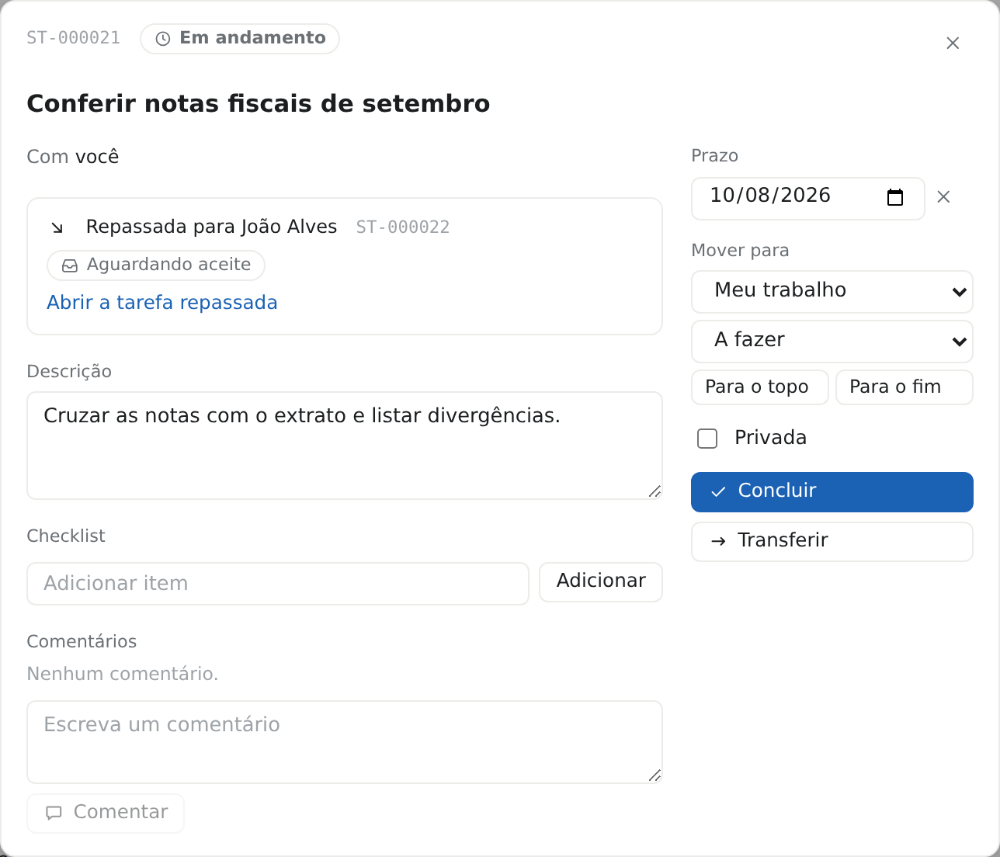
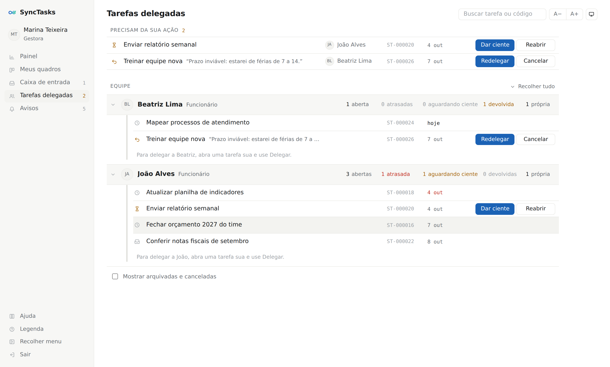
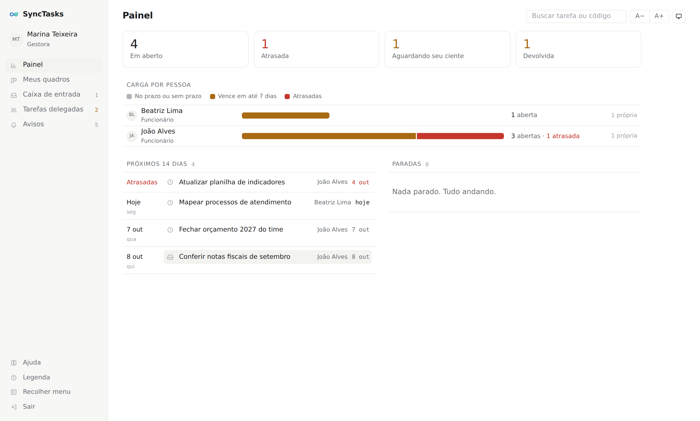

Gestão de tarefas para toda a empresa
Toda a empresa trabalhando na mesma direção.
O SyncTasks junta os quadros de tarefas de cada pessoa com a delegação de cima a baixo, do CEO à equipe. Cada um cuida do que é seu, e cada líder sabe como anda o que pediu.
A solução
Gestão de tarefas integrada em toda a organização.
Em muitas empresas, cada pessoa anota as tarefas num lugar diferente e os pedidos se perdem entre e-mails e conversas. No SyncTasks, tudo fica num só lugar, ligado à estrutura da empresa.
- Cada pessoa organiza o próprio trabalho no seu quadro, do jeito que preferir.
- Cada líder delega para a sua equipe direta e acompanha, numa tela só, o que está aberto, atrasado ou pronto para conferir.
- A diretoria enxerga o histórico completo de cada tarefa, sem precisar perguntar.
Ninguém vê o quadro do outro e as tarefas privadas continuam privadas. O que liga as pessoas é a delegação.
Recursos
Tudo o que a equipe precisa, sem complicação.
Quadros no estilo Trello
Crie quadros e fases livres, arraste os cartões e use prazo, checklist e comentários. Já usa o Trello? Importe seus quadros com um clique.
Delegação pela hierarquia
Delegue de dentro da tarefa para alguém da sua equipe direta. A pessoa recebe na caixa de entrada, aceita ou devolve com justificativa. Quando ela termina, você confere e dá o ciente, ou reabre com um comentário.

Painel do líder
Veja por pessoa da equipe o que está aberto, atrasado, aguardando ciente ou devolvido. As ações que dependem de você ficam no topo.

Tarefas direto do Gmail
Com um e-mail aberto, um clique no botão + SyncTasks cria a tarefa com o assunto como título e o link da mensagem guardado.
Histórico que não se apaga
Cada tarefa tem um código próprio, como ST-000123, e um registro de tudo o que aconteceu com ela.
Em qualquer tela
Funciona no computador e no celular, onde instala como aplicativo. Tem tema claro ou escuro e tamanho do texto ajustável.
Visão geral num relance
O painel mostra a carga de cada pessoa, a agenda dos próximos 14 dias e o que está parado.
Como funciona
Comece em três passos.
-
1. Monte a equipe
O administrador cadastra as pessoas e quem responde a quem. Cada um recebe um e-mail para criar a senha.
-
2. Organize e delegue
Cada pessoa cria seus quadros. Os líderes delegam tarefas para a equipe direta.
-
3. Acompanhe e conclua
A equipe conclui, o líder confere e dá o ciente. Tudo fica registrado.

Planos e preços
Escolha o plano do tamanho da sua empresa.
Grátis
Para testar com um time pequeno
R$ 0
- Até [10] pessoas
- Quadros e delegação
- Tarefas a partir do Gmail
Mais escolhido
Equipe
Para empresas em crescimento
R$ 20,00 por usuário/mês
- Pessoas ilimitadas
- Tudo do plano Grátis
- Painel do líder
- Histórico completo de cada tarefa
Empresa
Para grandes organizações
Sob consulta
- Tudo do plano Equipe
- Implantação assistida
- Suporte dedicado
Perguntas frequentes
Dúvidas comuns.
Meu chefe consegue ver todas as minhas tarefas?
Não. Ele vê só o que delegou para você e um número com quantas tarefas próprias você tem. Tarefas privadas nunca aparecem.
Posso delegar para qualquer pessoa?
Você delega para quem responde diretamente a você. Para colegas do mesmo nível ou para o seu superior, existe a opção de transferir a tarefa.
Preciso abandonar o Trello?
Não de uma vez. Você importa seus quadros e continua trabalhando do mesmo jeito.
Funciona no celular?
Sim. Abra no navegador e instale como aplicativo.
Quanto tempo leva para começar?
O administrador cadastra a equipe e cada pessoa recebe um e-mail para criar a senha. Dá para começar no mesmo dia.
Meus dados ficam seguros?
O acesso é por e-mail e senha, e o histórico de cada tarefa não pode ser alterado nem apagado.